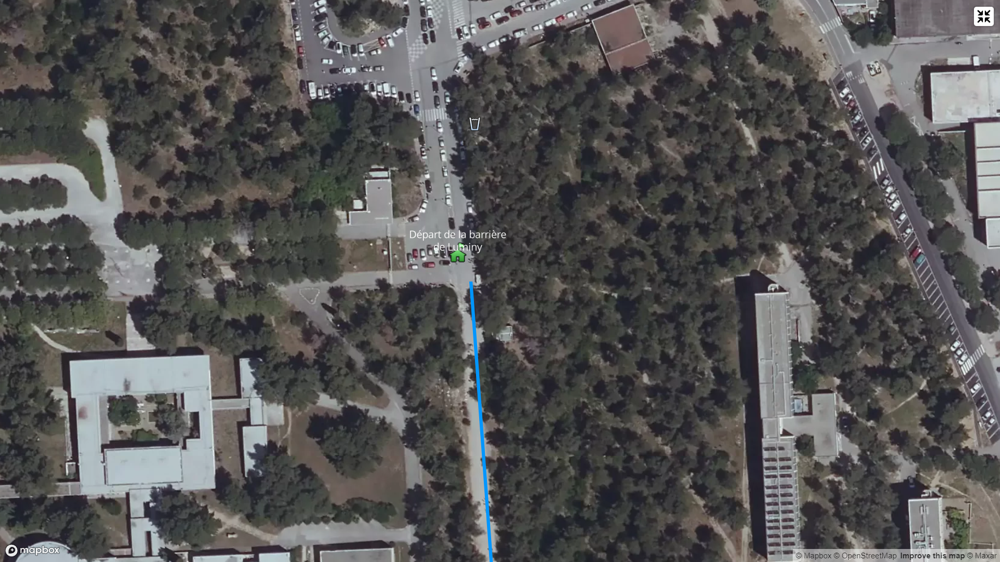
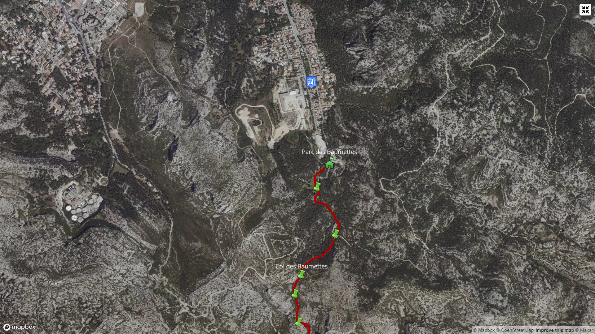
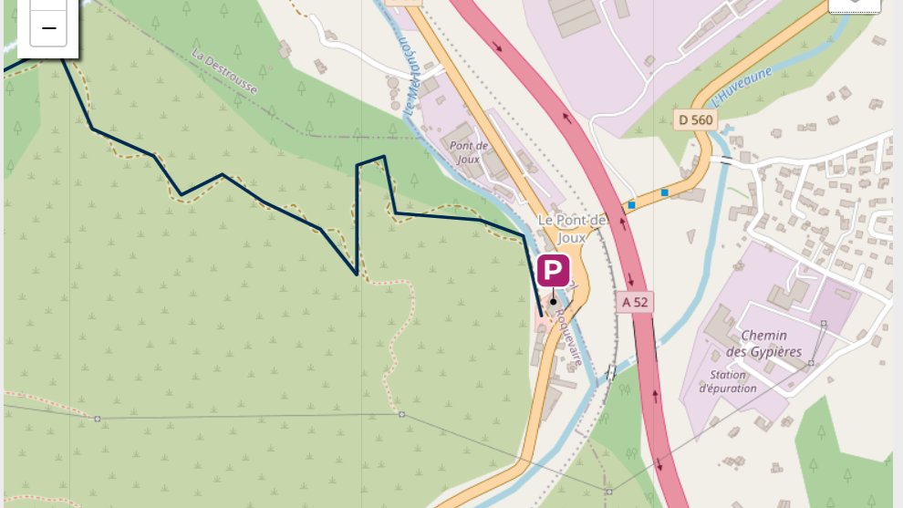
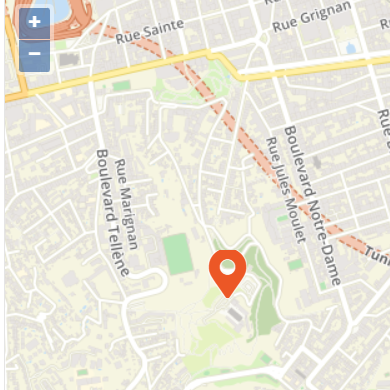

Découvrez Marseille sous un autre angle en profitant de ses beaux
paysages naturels comme urbains avec ces spots de randonnée
Calanques de Sugiton
Accés
Prendre la large piste en gravier à côté de l'école d'architecture (balisée en bleu) et la suivre jusqu'au col de Sugiton. Au col, prendre légèrement à droite le sentier en Pointillés Rouges qui descend à travers les pierres et quelques arbres. Le chemin rejoint rapidement la route en béton et coupe un dernier virage avant de ne faire plus qu'un avec elle. Suivre la route bétonnée jusqu'au dernier virage qui offre enfin une belle vue sur la calanque. 100m après prendre à droite le chemin toujours en Pointillés Rouges dont le sol redevient naturel et termine sa descente vers les criques de Sugiton.
La traversée est jugé facile et elle est aussi très fréquentée en été. Prévoir 3h en Moyenne (3,2km)
Calanques de Sormiou
Accés
Au départ du parking des Baumettes, situé au niveau de la barrière de la route de Morgiou, traverser le parc des Baumettes et au fond à gauche prendre le sentier de couleur Rouge qui va monter progressivement jusqu'à une large piste (DFCI). Prendre la piste à droite sur 250m jusqu'à atteindre le col des Baumettes sur votre gauche. Passer le col, la descente sur Sormiou commence ici et s'achèvera au niveau du grand parking en sable.
Cette randonnée est jugé comme facile aussi et aussi assez fréquentée. Il faut compté 2h de marche (2km)
Garlaban
Accés
La balade du Mont du Marseillais offre un merveilleux panorama à 360° sur les massifs environnants : la Grande Étoile, la Petite Étoile, le Pilon du Roi, le Mont Ventoux, la Sainte-Victoire, le Mercantour, le Pic de Bretagne ou encore la Sainte-Baume. La balade est accessible malgré son dénivelé d'environ 500 mètres.
Au départ de Lascours cette randonnée dure en moyenne 4H (9.21km) avec sont point le plus haut a 640m d'altitude.
Notre dame de la garde-Corniche
Accés
Beau circuit en bord de mer et dans la ville, empruntant majoritairement des pistes cyclables, trottoirs ou parc autorisés. D'une difficulté "Moyenne", elle devient "Facile" si on réalise la variante qui permet d'éviter la boucle vers la basilique de Notre-Dame de la Garde. Mais l'on se prive alors de points de vues et de panoramas féeriques sur Marseille et sa rade.
Au départ de Lascours cette randonnée dure en moyenne 4H (9.21km) avec sont point le plus haut a 640m d'altitude.